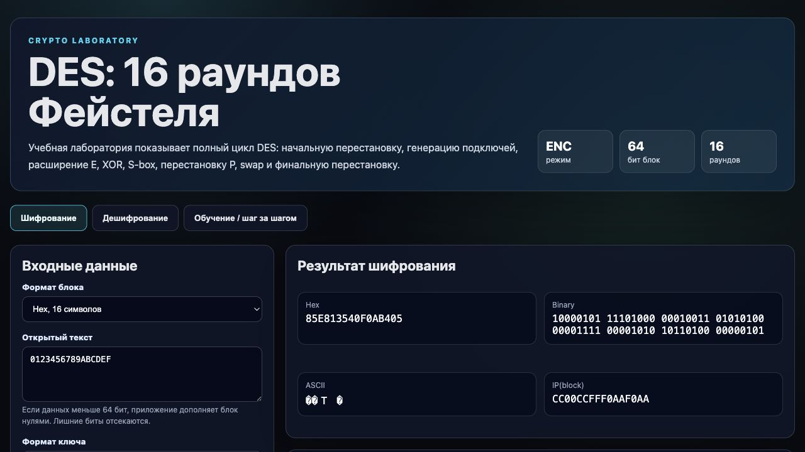

ТиПБОД · практическая работа
Интерактивное веб-приложение для шифрования, дешифрования и пошагового разбора алгоритма DES.
Автор: [ФИО] · Курс: «Теория информации и протоколы безопасного обмена данными» · 2026
DES уже не считается современным безопасным стандартом из-за малой длины ключа, но он хорошо показывает архитектуру блочного шифра: раунды, перестановки, нелинейную подстановку и обратимость сети Фейстеля.
Практический смысл работы: увидеть, как из простых операций над битами получается обратимое преобразование блока.
| Файл | Назначение | Почему вынесено отдельно |
|---|---|---|
| index.html | Разметка интерфейса: вкладки, поля ввода, блоки результата. | Страница остаётся понятной и легко публикуется на GitHub Pages. |
| des.js | Криптографическое ядро: таблицы DES, ключи, раунды, S-box. | Алгоритм можно проверить отдельно от интерфейса. |
| ui.js | Связывает ввод пользователя, запуск DES и визуализацию трассы. | Вся логика отображения не смешивается с математикой алгоритма. |
| styles.css | Тёмная «крипто-лаборатория», сетки битов, таблицы S-box. | CSS можно менять без риска сломать DES. |
Зависимостей сборки нет: приложение запускается в браузере и подходит для статического хостинга.
Главное свойство: для дешифрования используется тот же алгоритм, но подключи идут в обратном порядке.
Ключ проходит PC-1, где отбрасываются биты чётности. Затем половины C и D циклически сдвигаются по расписанию DES, после чего PC-2 формирует 16 подключей по 48 бит.
Пошаговый режим нужен не для скорости, а для объяснения: видно Lᵢ, Rᵢ, Kᵢ, E(Rᵢ), XOR, S-box и P.
Plaintext: 0123456789ABCDEF
Key: 133457799BBCDFF1
Ciphertext: 85E813540F0AB405
Результат приложения совпадает с контрольным значением.

В работе реализован полный цикл DES для одного 64-битного блока: шифрование, дешифрование, генерация подключей и пошаговая визуализация всех раундов. Приложение показывает, что DES обратим благодаря структуре Фейстеля, но одновременно демонстрирует его историческое ограничение — малое пространство ключей.
Публичная версия приложения: ulupapi.github.io/theory-of-info-hw/task3-des/
Исходный код: github.com/ulupapi/theory-of-info-hw